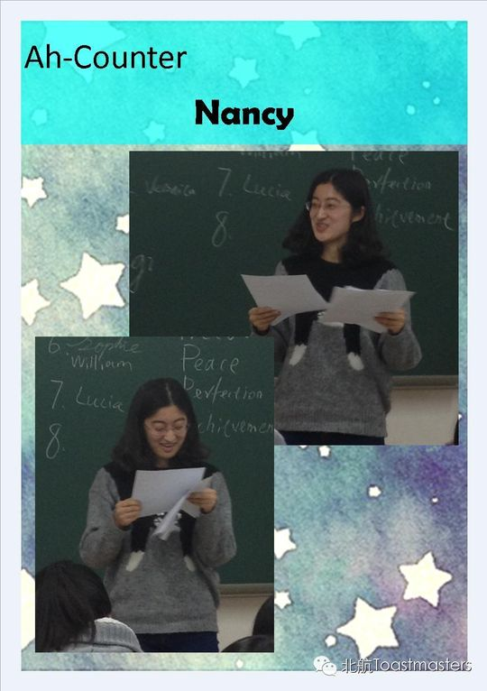
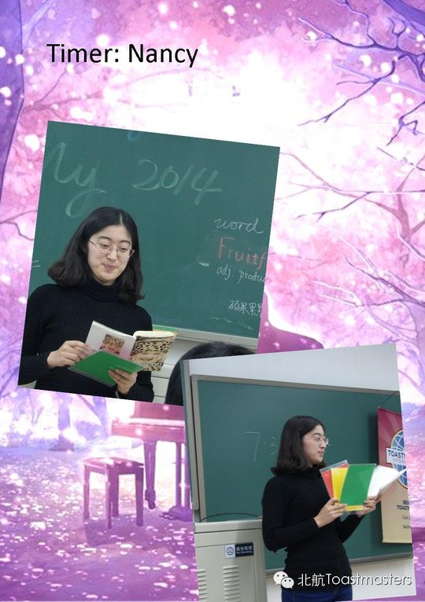
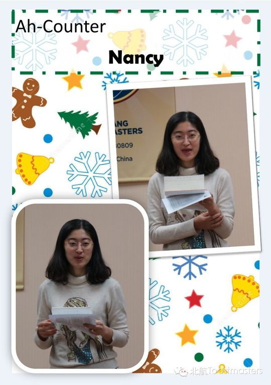
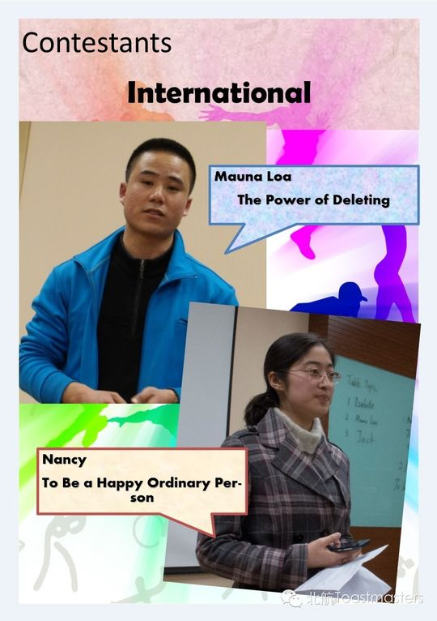
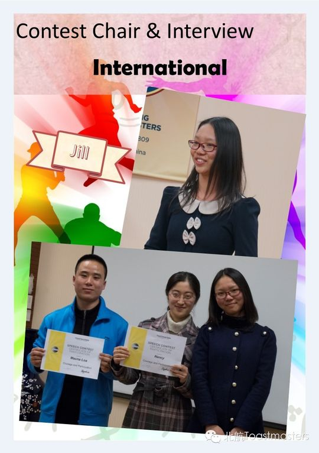
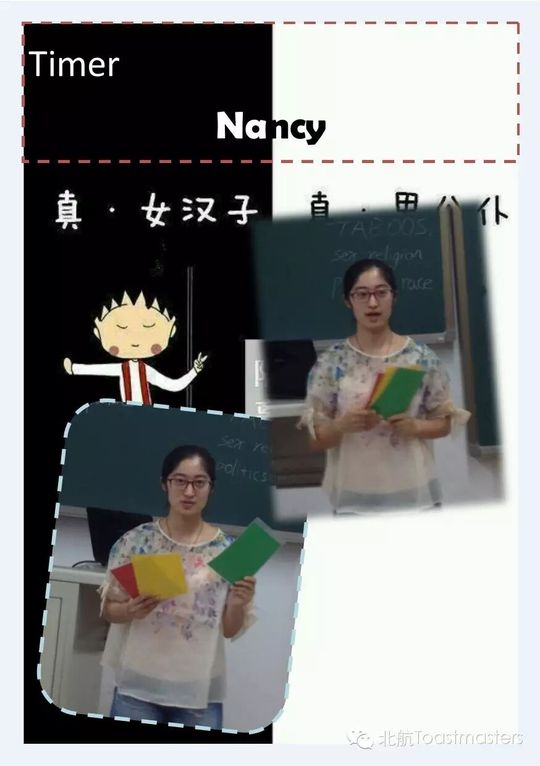
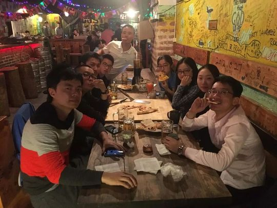

Nancy
从CC1一路稳步走来的"薇薇公主"，把头马当作克服恐惧、与人真诚分享世界的舞台。
会员活跃 2015–2016出现 7 次 · 7 篇3 场演讲
Nancy 是北航头马一位踏实而有亲和力的会员。被同伴形容为"薇薇公主 Vivi"，她有着东北女孩的快乐与率真，也有着金牛座的耐心和踏实。"读过万卷书，行过万里路"，她总是带着自己世界里的故事，等人倾听——这正是她在头马舞台上最动人的模样。
她的成长轨迹清晰而扎实。2015 年春天，她以英文选手的身份站上了北航头马春季演讲比赛的赛场；紧接着在 91 次会议完成 CC1《My trip in the Qingming festival》，分享清明假期的旅程，正式开启破冰之旅。此后她几乎一气呵成：CC2《The Intouchables》借电影《触不可及》讲述两个迥然不同的人之间的故事，CC3《Step Over Fear》则把"恐惧是一间屋子，唯有走出去才能见到太阳"讲得真切动人——克服恐惧、走出舒适区，是贯穿她演讲的内核。
随着实力增长，她在 2015 年秋季比赛中再次披挂上阵，成为英文组选手。在与 Athena 女神俱乐部的中文联合例会上，她也活跃于即兴环节，与 Jill 同台演绎"甄嬛传"式的情景对手戏。直到 2016 年的 140 次会议，她仍出现在即兴情景剧中扮演"女儿国国王"，可见她对俱乐部的长期参与与热情。
总体而言，Nancy 是那种用稳定与真诚一步步成长的头马人：从破冰到接连完成 CC 项目，再到两度征战比赛舞台，她始终把头马当作挑战自我、与人分享的地方。
完整足迹 · 7 次出现（点开，每条可跳转原文）
- 2015-03-12第87次 · 参加春季比赛英文演讲
- 2015-04-10第91次 · 做备稿演讲My trip in the Qingming festival
- 2015-05-20第96次 · 做备稿演讲The Intouchables
- 2015-07-09第103次 · 备稿演讲《Step Over Fear》
- 2015-08-13第106次 · 参加2015秋季比赛英文组(薇薇公主)，东北金牛座女孩
- 2015-10-26第115次 · 即兴演讲，与Jill演甄嬛传情景
- 2016-06-05第140次 · 与Pedtro表演情景剧扮演女儿国王
闯关之路 · Competent Communication
✓
CC1
破冰
✓
CC2
组织你的演讲
✓
CC3
明确目标
CC4
怎么说
CC5
肢体在说话
CC6
声音的变化
CC7
研究你的主题
CC8
善用视觉辅助
CC9
以理服人
CC10
激励听众
做过的演讲 · 3 场
分享清明三天小长假里一段难忘的旅行经历，作为破冰演讲登场。
借电影《触不可及》讲述一位残障富翁与年轻看护之间两个迥异灵魂的故事。
把恐惧比作一间屋子，唯有走出去才能见到阳光，鼓励大家跨越恐惧、抓住机会。
担任过的会议角色
备稿演讲者 Speaker×3演讲比赛选手 Contestant×2即兴演讲者 Table Topic Speaker×2
里程碑
- 2015-03-13 首次登上比赛舞台 ↗在北航头马 2015 春季演讲比赛中作为英文组选手亮相。
- 2015-04-10 完成破冰演讲 CC1 ↗在 91 次会议带来《My trip in the Qingming festival》，正式开启 CC 之旅。
- 2015-08-14 再战秋季比赛 ↗作为英文组选手参加 2015 秋季比赛，被昵称为'薇薇公主 Vivi'。
- 2016-06-05 持续活跃于俱乐部 ↗在 140 次会议的情景剧即兴中扮演女儿国国王，长期参与俱乐部活动。
为俱乐部做的事
- 接连完成 CC1、CC2、CC3 备稿演讲，以稳定的成长为新会员树立榜样
- 两度代表俱乐部参加春季与秋季英文演讲比赛
- 积极参与即兴演讲与情景剧，为联合例会和中文之夜贡献活力
- 作为可靠的伙伴长期参与例会，从 2015 年延续到 2016 年
头马里的人
照片墙 · 时间线
共 26 帧，其中 18 帧已用人脸识别确认是本人（带 ✓）。
 ✓
✓
✓
✓
✓ ✓
✓
✓
✓ ✓
✓ ✓
✓
✓ ✓
✓ ✓
✓ ✓
✓ ✓
✓ ✓
✓ ✓
✓
✓


“Fear is a room, only when out of which, can we see the sun.”